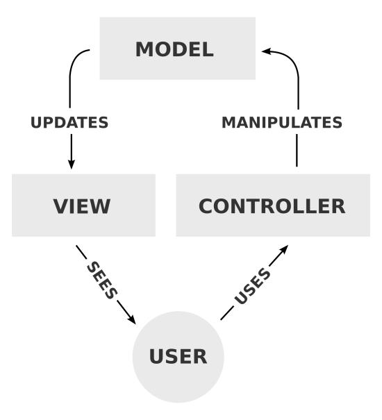
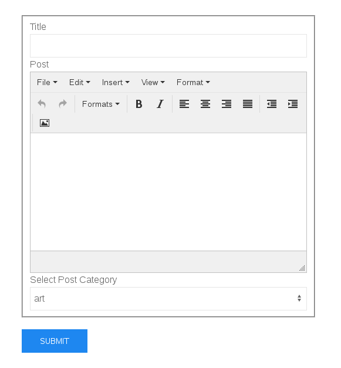
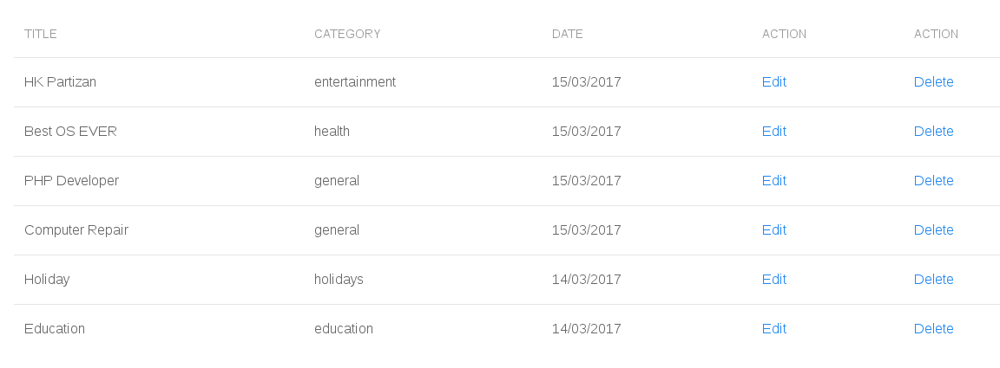
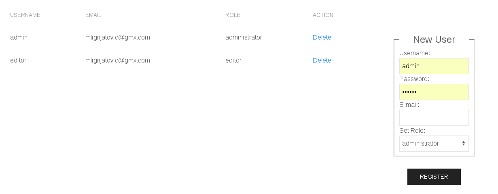
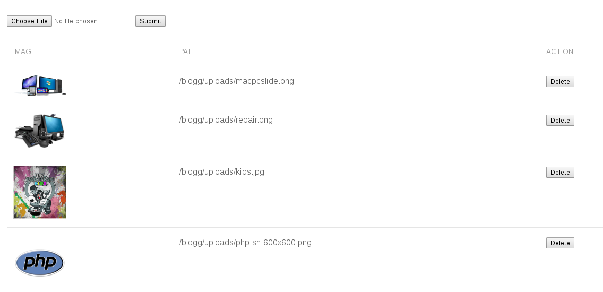

MVC
BLOGGING
engine
“MVC Blogging Engine” is the simple blogging engine written with Fat-Free PHP Framework. I used “original” MVC pattern and that means that I tried to use pattern on an image below.
 Go to source codeThe Views are directly connected with Models and that communication is just for taking data FROM database. In this case, Views are not the templates, they responsible for delegating right data to the right template and show the right template.
Controllers are responsible for manipulating ON database data (insert,edit,delete...).
Models are places where actual logic behind Views and Controllers is taking place. Models are in direct connection with the database.
Little about functionality
I add tinymce for text processing.User can insert posts...
 Go to source code...Delete(if logged in as admin) or edit posts
 Go to source codeAdmin users can delete users and register new users.An editor can just see the list of users.
 Go to source codeUsers can upload images and delete them.
Image names are inserted in the database and actual files are uploaded in the uploads folder.
 Go to source codeIf you decide to try blogging engine on your local computer(not for production usage),download source code from HERE. In the config folder in config.ini file change database credentials to match your database. Then upload a SQL file to your database. If everything went ok, you can now login. User: admin , password: 123456 or User: editor, password: 123456.
You will notice that there is not too much design. Templates are separated from logic so it is very easy to edit them. They are in Ui/ folder. Templates are made with Uikit so you have it at your disposal.